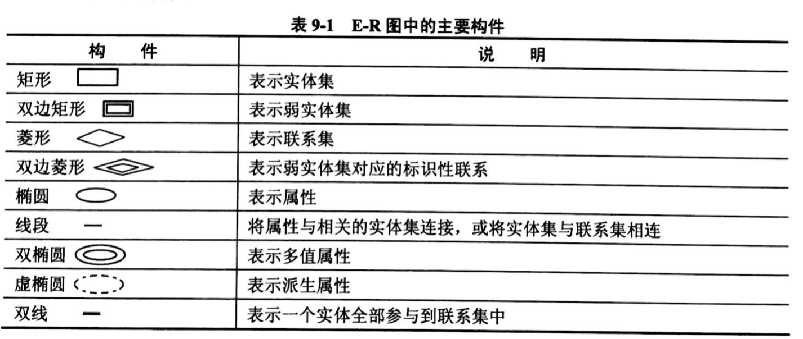
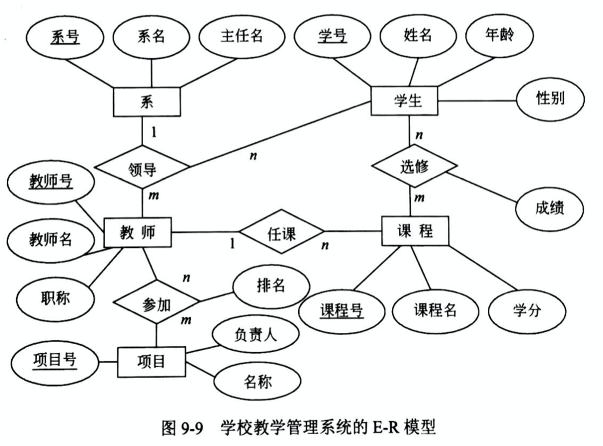
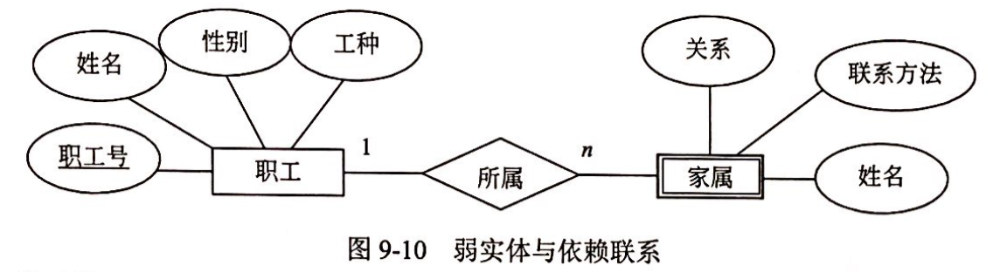
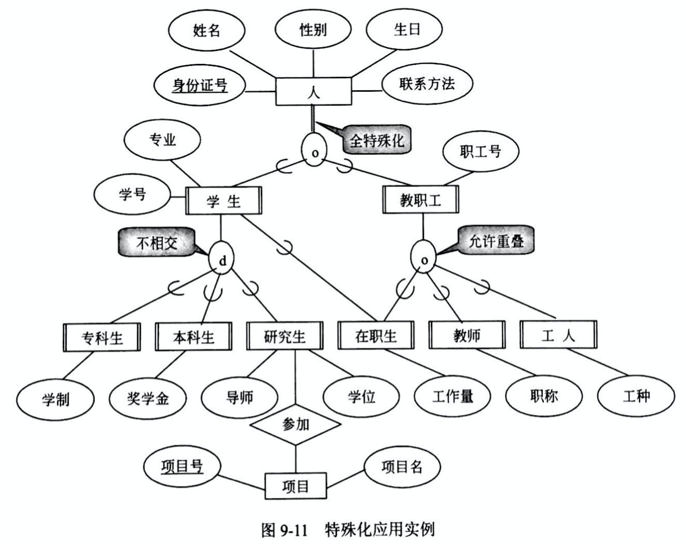
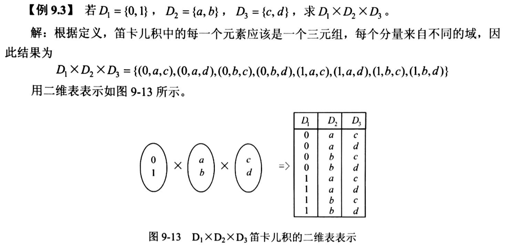
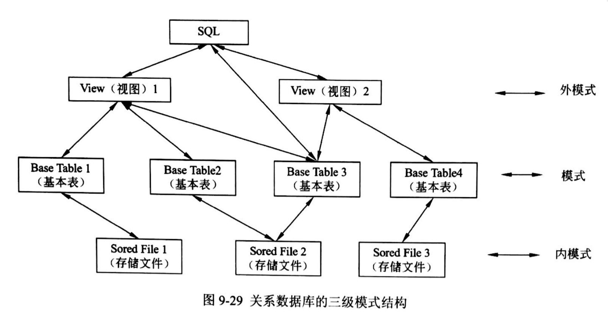

数据库分析与设计
试题放置
第二大题
第9章 数据库技术基础
9.1.1 数据库系统（DataBase System, DBS）
由数据库（DB）、硬件、软件和人员组成。
数据库特点：数据间联系密切、冗余度小、独立性较高、易拓展，可为各类用户共享。
人员4类：系统分析员和数据库设计人员；应用程序员；最终用户；数据库管理员（DataBase Administrator, DBA）。
9.1.2 数据库管理系统（DataBase Management System, DBMS）的功能
数据定义（Data Definition Language, DDL）、 数据库操作（Data Manipulation Language, DML）、 数据库运行管理、数据的组织存储和管理、数据库的建立和维护、其他。
9.1.3 DBMS的特征及分类
数据结构化且统一管理；
有较高的数据独立性；
数据控制功能（包括：数据库中数据的安全性、完整性、并发控制、故障恢复）；
DBMS分为三类：
关系数据库系统（Relation DataBase System, RDBS）
面向对象数据库系统（Object-Oriented DataBase System, OODBS）：完整地描述现实世界的数据结构，能表达数据间的嵌套、递归关系；具有OO的封装性和继承性，提高了软件的可重用性。
对象关系数据库系统（Object-Oriented Relation DataBase System, ORDBS）： 在RDBS基础上提供元祖、数组、集合等更丰富的数据类型以及处理新的数据类型操作的能力。
9.1.6 大数据（Big Data）
无法用现有的软件工具提取、存储、搜索、共享、分析和处理的海量的、复杂的数据集合。
特征4V：大量化(Volume)、多样化(Variety)、价值密度低(Value)、快速化(Velocity)
9.2.2 数据模型的三要素
数据结构、数据操作、数据的约束条件
9.2.3 实体-联系模型（Entity-Relationship Model, E-R）

实体
联系
属性
- 简单属性和复合属性：简单属性是原子的、不可再分的
- 单值属性和多值属性：单值属性对于一个实体只有一个单独的值
- NULL：无意义或不知道
- 派生属性：由其他属性得来，比如：工作年限=当前时间-参加工作时间 
弱实体：一个实体的存在必须以另一个实体为前提 
- 特殊化：实体具有共性和特殊性，从普通到特殊的过程 
9.2.4 数据模型
层次模型、网状模型、关系模型、面向对象模型
9.3 关系代数
9.3.1 关系数据库的基本概念
属性（Attribute）：描述事物的特征
属性的域（Domain）: 每个属性的取值范围对应的一个值的集合
第一范式（First Normal Form, 1NF）：在关系数据模型中，通常对域加了一个限制，所有的域都是原子数据（Atomic Data）
例如：整数、字符串、整形、浮点型，而集合、记录、数组是非原子数据。
笛卡尔积

9.4 关系数据库SQL(Structured Query Language)语言简介
9.4.1 SQL数据库体系结构
特点：
综合统一
高度非过程化
面向集合的操作方式
终端命令操作（自含式语言）和嵌入高级语言程序的使用方式
语言简洁、易学易用
SELECT//查询
CREATE DROP ALTER//定义
INSERT UPDATE DELETE//操纵
GRANT REVORK//控制
